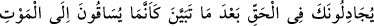
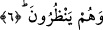

6. Hak ortaya çıktıktan sonra sanki gözleri göre göre ölüme sürükleniyorlarmış
gibi (cihad hususunda) seninle tartışıyorlardı.
Düşman ordusunu karşılamanın “hak” olduğu “ortaya çıktıktan sonra” kervanı
karşılamayı düşmanla karşılaşmaya tercih ettikleri için “sanki gözleri göre göre ölüme
sürükleniyorlarmış gibi” yani, ölüm için gerekli sebeplere baka baka ve ayan beyan
göre göre zorla ve tahkir edilerek ölüme götürülen kimselere benzer vaziyette cihad
hususunda “seninle tartışıyorlardı.” yani hangi tarafa yönelirlerse muhakkak Allah’ın
yardımına nail olacaklarını bildirdiğin için kendilerine hak âşikar olduktan ve ayan
beyan ortaya çıktıktan sonra seninle tartışıyorlardı. “Biz ancak kervanı yakalamak için
çıktık. Eğer düşmanla savaşmak üzere çıktığımızı söylemiş olsaydın hazırlıklı
çıkardık.” diyorlardı.
Bunu söyleyenler, Hz. Peygamber (a.s.)’ın kendilerini Medîne’den çıkarmasından
hoşlanmadıkları ve savaşmak istemedikleri için böyle konuşuyorlardı. Bu kadar çok
korku ve endişe duymalarının sebebi; sayılarının azlığı, hazırlıklarının olmayışı ve
piyade oluşları idi.
Rivayete göre Bedir harbinde müslümanların sayısı 313 idi. İçlerinde sadece Zübeyr
ve Mikdad atlıydı. 70 develeri, 6 zırhları ve 8 de kılıçları vardı. Müşrikler ise sayı ve
hazırlık bakımdan müslümanlardan kat kat fazlaydı.
Bu âyetlerin işârî yorumu şöyledir: Allah Teâlâ hakiki müminleri inâyet cezbeleriyle
beşeriyet vatanından indiyyet (Allah’la beraber olma) makamına çıkardı. “Onların bu
hali, “müminlerden bir grup” yani kalb ve ruh, her mevcud bakâyı sevdiği ve fenadan
hoşlanmadığı için tecellî sırasında fenâ bulmayı “kesinlikle istemediği halde,
Rabb’inin seni evinden” varlığının vatanından “hak uğruna” cemâl ve celâl
sıfatlarının tecellîsinden hakkın doğmasıyla “çıkardığı” zamanki halleri “gibidir. Hak
ortaya çıktıktan” hakkın geldiği belli olduktan “sonra” fenâdan hoşlanmadıkları için
“sanki gözleri göre göre”; fenâya bakarak “ölüme sürükleniyorlarmış gibi” hakkın
gelmesi hususunda kalb ve ruh “seninle tartışıyorlardı.” Halbuki ölüme sürüklenen
kimse gibi fenâdan sonra bakâ, zeval bulmaz. (et-Te’vîlâtü’n-Necmiyye’de böyle
geçmektedir.)
Mesnevî’de şöyle denilmiştir:
Dünya aslanı av ve rızık arar
Allah aslanı ise hürlük ve ölüm